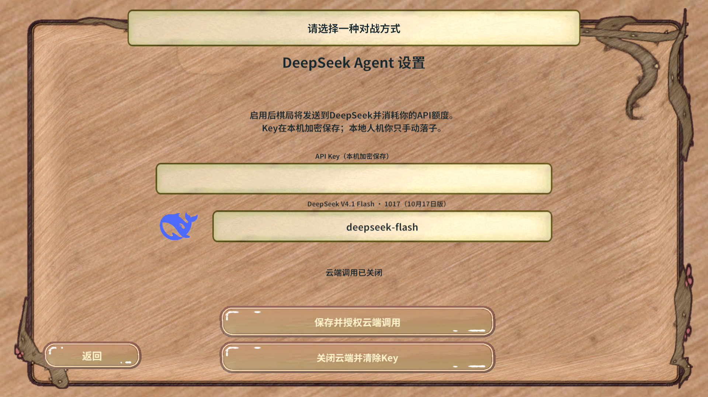

交付结果
本地加密保存、跨Play恢复、损坏拒绝、清除与官方Logo冷AB首次显示/重入全部通过。
Key、模型与授权以Windows当前用户DPAPI加密后写入PlayerPrefs；正式Bootstrap在启动时恢复。模型API名默认deepseek-flash，界面显示DeepSeek V4.1 Flash · 1017（10月17日版）。官方Logo等比渲染为PNG，通过唯一PvpAgent Sprite Atlas V2接入。
验证证据
| 检查 | 结果与边界 |
|---|
| Unity编译 | 零Error。 |
| 离线检查 | 真实Windows DPAPI往返、密文不含明文、损坏拒绝、删除记录；原有27项计时状态断言及Agent闭环检查通过。离线PlayerPrefs为内存替身，实际Unity另验。 |
| 实际Unity跨重启 | 首次Play真实PlayerPrefs写入独立测试槽；完整退出Play并再进入，重新discover后验证Key/模型/授权恢复。使用固定假Key，未覆盖玩家正式存储项；finally已清理测试槽。 |
| 真实PC AB | abMode=true，设置模型控件deepseek-flash；截图核对官方蓝鲸、版本文字，退出回大厅后重入正常。 |
| 资源门禁 | canBuild=true，errors/shared/circular为空；独立PvpAgent Sprite Atlas V2，资源经项目正式构建复制StreamingAssets。 |
| 回归与清理 | Agent规则检查通过；运行期errorCount=0；已返回大厅、停止Play，StartScene无dirty。 |
使用与限制
设置中填写Key和模型后点击“保存并授权云端调用”，下次启动自动恢复。点击“关闭云端并清除Key”删除本地密文。Key仍以密码形式显示，不发送给联机服务器或写入报告/仓库。
当前持久化覆盖Windows；其它平台明确拒绝保存，没有明文回退。DPAPI通常绑定当前Windows用户与设备，不适合作为跨用户可迁移存档，也不防当前用户进程读取游戏内存。本轮不使用真实Key，未验证付费API调用、模型棋力或响应耗时。
deepseek-flash是供应商别名。官方文档当前指向V4.1-Flash-1017，不代表未来永久锁定1017版本；没有伪造一个未经官方支持的快照API名。
实际MCP顺序
连接目标工程stdio → rev_discover(editor/status) → rev_call(editor.status/scene.list) → 导入编译后重新发现 → rev_call(game.pvp.agent-assets/game.resources.configure/ab.issues/正式AB构建) → editor.play/runtime.start → rev_discover(game/pvp.agent-storage) → rev_run(独立槽保存) → editor.stop/editor.play/runtime.start → 重新rev_discover → rev_run(恢复、损坏拒绝、清除、冷AB与重入截图、日志、finally清理) → editor.stop。没有调用GM目标或用CLI冒充MCP；详细机器证据保留忽略目录.codex/work/pvp-agent-local。
框架可行性
继续由RevServices装配PVP服务、RevUI异步开屏和绑定、GameSpriteAtlasService与RevResManager管理Logo图集引用。OS凭据保护由项目存储适配负责，未改Revolution内核；生成资源映射按正式工具更新。结论覆盖Windows Editor与真实PC AB，未延伸到其它平台。
真实画面
